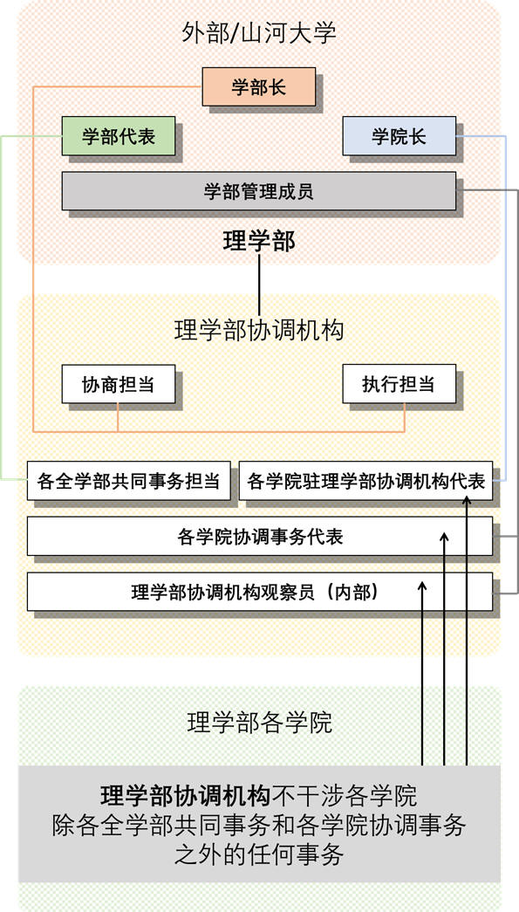

理学部基本人员架构发布
理学部基本人员架构
对内
理学部是虚拟大学-山河大学的学部之一。
理学部的学部处工作，主要由全学部共同事务和学院协调事务构成，我们的思想是给各学院自由的发展空间，并协调各学院运行，同时全权专任负责全学部共同事务。学部处的协商机构和执行机构是理学部协调机构，理学部协调机构=理学部学部处。
全学部共同事务是指由理学部协调机构协商通过的，在理学部所有学院运作的事务，所属理学部的所有学院应该配合执行全学部共同事务。由各全学部共通事务担当全权执行。
学院协调事务是指由各学院代表同意或建议的，由理学部协调机构执行的协助各学部工作的事务，这些事务可能并不关联到所有学院。由各学院协调事务代表专任执行。
现有4个学院所属在理学部。分别是物理学院，化学和分子工程学院，生命科学学院，以及数学科学学院。
理学部目前的全学部共通事务有4个。教学事务，联合院刊事务，宣传事务，对外关系事务。
理学部目前的学院协调事务有4个。
Ø
（物理学院）每日一题与学部网站对接事务。
Ø
（物理学院，化学和分子工程学院，生命科学学院，数学科学学院）学习和学术研讨会协助事务。
Ø
（物理学院，数学科学学院）数字教学资源与学部网站对接事务。
Ø
（化学学院，生命科学学院）生命化学科协调事务。
对外
理学部原则上不设任何职位，只以工作内容分配担当（全权），和代表（专任）。但是理学部对山河大学，以及理学部对外事务需要分配具体职位名称。
以下是理学部协调机构各职对外时对应的职位名称。
Ø
理学部协调机构，协商担当-理学部部长
Ø
理学部协调机构，执行担当-理学部部长
Ø
理学部协调机构，各学院驻理学部协调机构代表-各学院院长
Ø
理学部协调机构，各全学部共通事务担当-理学部代表
Ø
理学部协调机构，各学院协调事务代表-理学部管理成员
Ø
理学部协调机构，各其他代表和观察员-理学部管理成员-根据情况在机构内分配任何职位名称
注意：
对外分配的职位名在理学部协调机构内不使用，无任何意义。
全权：为执行特定事务，可代表理学部并行使理学部部长权力。受理学部协调机构监督。
专任：代表理学部协调机构执行特定事务，对理学部协调机构负责。
理学部任何部门，人员不受其他学部的任何人员管理。
理学部协调机构
理学部协调机构代表理学部，是理学部学部处的协商和执行机构。
理学部协调机构设协商担当和执行担当，各全学部共同事务担当和各学院驻理学部协调机构代表，各学院协调事务代表，理学部协调机构观察员。
理学部协调机构不干涉各学院除各全学部共同事务和各学院协调事务之外的任何事务。
各全学部共同事务担当和各学院驻理学部协调机构代表由协商担当或执行担当最终决定。
各学院协调事务代表和理学部协调机构观察员由各学院驻理学部协调机构代表最终决定。
理学部协调机构的成员必须符合以下基本要求：未在其他学部任职，未在其他的山河大学任职。
理学部协调机构完成对某事务的表决采取投票制度。
理学部协调机构投票制度
人员免职：达到1票点通过
全学部共同事务：达到应有总票点（包括弃权的）一半以上时通过。
|
协商担当 |
否决权 |
|
执行担当 |
5票点 |
|
各全学部共同事务担当 |
2票点 |
|
各学院驻理学部协调机构代表 |
2票点 |
各学院协调事务：达到应有总票点（包括弃权的）一半以上时通过。
|
协商担当 |
否决权 |
|
执行担当 |
5票点 |
|
各学院协调事务代表 |
2票点 |
|
各学院驻理学部协调机构代表 |
2票点 |
注意：原则上，当得票点趋近总票点一半时，协商担当应使用否决权，避免较大争议的表决通过。
附图：

|